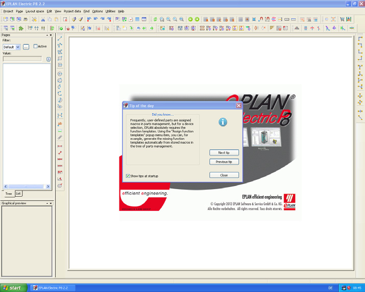

Для Eplan версий 2.x рекомендуется процессор 2.4-GHz Intel Core 2 Duo и объем ОЗУ не менее 4 GB.
У Eplan нет специальных требований к графическому адаптеру и другим компонентам ПК, компьютер предназначенный для работы со стандартными офисными приложениями
подойдет и для работы с Eplan, однако больший объем ОЗУ позволит Вам более комфортно работать с Eplan.
Следует так же заметить что дополнения к Eplan такие как ProPanel и его расширения имеют другие требования к аппаратному обеспечению (в особенности к
графическому адаптеру и его драйверам).
Отдельным пунктом следует упомянуть разрешающую способность мониторов. Так как работа в Eplan связана с необходимостью работать с большим колличеством
навигаторов то для комфортной работы необходимо 2 FullHD монитора.
Однако работать в Eplan можно и с одним монитором, но разрешение этого монитора не должно быть меньше чем 1280x1024 пикселя.
Более подробную информацию о системный требованиях Eplan можно получить на официальном сайте
Eplan устанавливается как стандартное приложение Windows.
Обычно установка начинается после того как Вы втавили установочный диск в привод оптических дисков. Если этого не произошло, Вам нужно запустить файл Setup.exe находящийся в корневой директории диска.
ПРИМЕЧАНИЕ: Eplan требует наличие в системе .NET Framework. Перед тем как приступать к установке Eplan установите .NET Framework последней версии.
Начальное окно установщика Eplan Жмем Next
ПРИМЕЧАНИЕ: Если Вы устанавливаете x64 версию Eplan, то Вы увидите окно с предупреждением о том, что Microsoft Office® также должен быть версии x64. Либо для баз данных “Управления проектами”, “Переводов” и “Изделий” должен быть сконфигурирован MS SQL Server®.
Окно в котором необходимо принять лицензионное соглашение Устанавливаем галочку в чекбоксе и жмем Next
В данном диалоговом окне производится настройка основных каталогов Eplan и единиц измерений Корректируем каталоги установки по своему усмотрению или оставляем значения по умолчанию и жмем Next
Появляется следуещее диалоговое окно в котором предлагается выборать компоненты Eplan которые будут установлены, основыне данные и языки, как самой системы так и справки
После нажатия Install установщик Windows приступит непосредственно к установке Eplan
ПРИМЕЧАНИЕ: Если Вы устанавливаете Eplan, более новой версии, в систему где уже установлена прежняя версия Eplan системные основные данные новой версии не заменят системные основные данные прежней версии, и если Вы хотите работать с основными данными новой версии Вам необходимо будет выполнить синхронизацию вручную.
Eplan не переписывает основные настройки пользователя. И в случае если пользователь сохранял основные данные под оригинальными именами, они будут перезаписаны новыми файлами. Поэтому перед тем как приступать к установке новой версии Eplan рекомендуется скопировать пользовательские основные данные.
После нажатия Finish установка Eplan будет завершена
Теперь Eplan может быть запущен с ярлыка на рабочем столе. При первом запуске, если лицензия еще не установлена, Вам необходимо будет провести процесс активации Eplan при помощи ключа аппаратной защиты и номера лицензии
Диалоговое окно для ввода номера лицензии
Eplan запускается с диалоговым окном ВЫБОР ОБЪЕМА МЕНЮ
В этом диалоговом окне Вы можете выбрать один из следующих пунктов:
ПРИМЕЧАНИЕ: диалоговое окно ВЫБОР ОБЪЕМА МЕНЮ будет появляться в случае если Eplan запускается в режиме без управления правами пользователей.
Если Вы использовали прежнюю версию Eplan то при первом запуске Вам будет предложено импортировать настройки (пользователя, рабочей станции и фирмы) из прежней версии. Если вы нажмете Отмена никакие настройки из прежней версии не будут импортированы.
Eplan запущен, открыто стандартное рабочее пространство, также отображается “Совет дня” 
Вы можете использовать функцию экспорта схем, фильтров и т.п. настроек сделанных в прежней версии Eplan если Вам это необходимо.
Так как Eplan более поздних версий имеет отличия в базах данных, которые не поддерживаются в прежних версиях, то рекомендуется устанавливать новую версию и основные данные новой версии Eplan к каталоги отличные от каталогов прежних версий
В первую очередь это относится к базе данных изделий (БДИ). Если Вы откроете БДИ в новой версии Eplan Вам будет предложено, для возможности обрабатывать БДИ, переформатировать ее в новую версию. Это приведет к невозможности обрабатывать БДИ в прежней версии Eplan. Однако Вы все же сможете использовать эту БДИ в прежней версии Eplan только в режиме чтения.